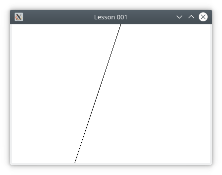

If you read the equation aloud, you say "y equals 3 (times) x plus 4."
Notice that "equals" and "equation" have the same stem-word "equa", from the latin word which means "identical".
Notice that the word "times" is optional.
When we use an equation to compute something, we often refer to the equation as a formula.
What "formula" means is a procedure whereby you substitute a value for $x$ into the equation, and the use the equation to compute a corresponding value of $y$.
For example, if you substitute the value $5$ for $x$, you get a corresponding $y$ value of $3\times5 + 4$.
Since $3\times 5 + 4 = 19$, we can say that for $x$ = $5$, the formula yields $y$ = 19.
Obviously, computers are very good at computing values from formulas.
Observe that in the given equation, for any single value of $x$ (where $x$ is a real number), there is a corresponding single value of $y$ (where $y$ is also a real number).
When an equation has the property that for any single value of $x$ there is a corresponding single value of $y$, we say that the equation represents a function.
In such a case, we may write $f(x) = 3x+4$ instead of $y = 3x + 4$
If you read this function aloud, you say "f of x equals 3 (times) x plus 4.
Here, "f of x" is an abbreviation of "function of x".
Most computer programming languages also have language features that they call functions, but it's important that computer language functions are not always equivalent to mathematical functions.
only when they have the same properties as mathematical functions, are computer language functions equivalent to mathematical functions.
Because they are very good at computing values from formulas, and because they have graphics capabilities, computers are very good at drawing graphs of functions.
Drawing the graph of $y = 3x + 4$ involves computing $y$ for a great many values of $x$, and then drawing the results - often as a great many points - on the computer's screen.
ASSIGNMENT: Your assignment is to draw a graph similar to this one, using JGlut. The graph shall consist of 1024 points, and should reach from one side of the window to the other. It should resize correctly.
